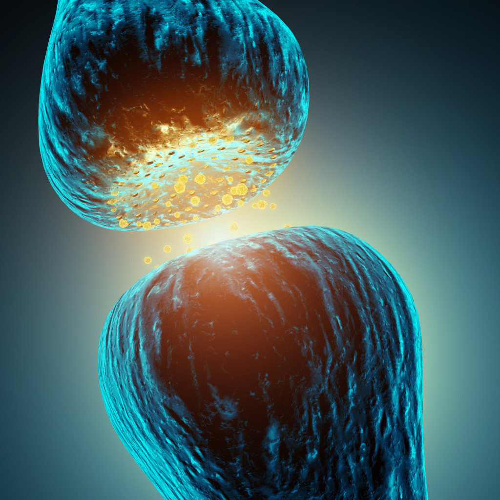

Anatomia creierului a fascinat si inca mai fascineaza oameni de stiinta din intreaga lume, creierul fiind in continuare un subiect de studiu care ofera lucruri noi si surprinzatoare chiar si in zilele noastre. Creierul este unul dintre cele mai complexe organe din corpul uman. Creierul nostru ne ofera constientizarea propriei persoane si a mediului in care traim, procesarea unui flux constant de date senzoriale. Acesta controleaza miscarile musculare, secretiile glandelor, respiratia si temperatura interna. Fiecare gandire creativa, sentiment si orice plan este dezvoltat de creierul nostru. In plus, neuronii din creier inregistreaza in memorie fiecare eveniment din viata. Pentru a intelege mai bine aceste lucruri este bine sa stii anatomia creierului.
Creierul nostru - informatii de baza
Sistemul nervos central poate fi impartit, din punct de vedere anatomic in doua elemente importante: maduva spinarii (legata direct de trunchiul cerebral) si encefalul, sau creierul asa cum il stim toti.
Creierul (encefalul) este parte a sistemului nervos central si se afla in interiorul craniului. Acesta controleaza cele mai multe dintre functiile organismului ( respiratie, miscare, ganduri, emotii, bataile inimii, secretii ale glandelor etc.). La om si la animalele vertebrate, creierul este captusit cu o membrana numita meninge si este protejat de cutia craniana.
Creierul uman adult cantareste in medie 1,5 kg, cu un volul aproximativ de 1130 cm3 la femei si 1260 cm3 la barbati. Encefalul uman este compus din neuroni, celule gliale si vase de sange. In creierul uman se gasesc pana la 100 de miliarde de neuroni, fiecare dintre ei avand aproximativ 10 000 de conexiuni (sunt cazuri cu 200 de miliarde de neuroni).
Exista mai multe moduri si criterii pentru impartirea anatomica a creierului, insa, metoda cea mai comuna este impartirea creierului in 3 regiuni principale, bazata pe dezvoltarea embrionara: creierul anterior, creierul mijlociu si creierul mic.
este partea cea mai anterioara a creierului si este alcatuit din talamus, hopotalamus si glanda pineala. Neuroanatomistii impart aceasta zona in 2 structuri: diencefalul si telencefalul. Diencefalul contine structuri cum ar fi talamusul si hipotalamusul, care sunt responsabile pentru anumite functii cum ar fi controlul motor, reintegrarea informatiilor senzoriale si controlul functiilor autonome. Telencefalul reprezinta cea mai mare parte a creierului, cortexul cerebral. La nivelul cortexului cerebral are loc cea mai mare parte din procesarea informatiilor la nivelul creierului.
De retinut ca aceasta parte a creierului (creierul anterior) este responsabial pentru receptionarea si procesarea informatiilor senzoriale, gandirea, perceptia, realizarea si intelegerea limbajului si controlul functiilor vitale. Cu alte cuvinte, prozencefalul indeplineste functii precum mestecatul; echilibrul, vederea, miscarile oculare, auzul, memoria, personalitatea, respiratia, mirosul, gustul, salivatia, ingitirea alimentelor, inteligenta, directionearea impulsurilor senzoriale din tot corpul.
este situat in centrul creierului si face legatura intre prozencefal si rombencefal. Acaesta parte a creierului este implicata in rspunsurile auditive si vizuale, dar si in functionarea motorie.
numit in limbaj de specialitate rombencefal, se afla in continuarea maduvei spinarii si este impartit in doua diviziuni importante: metencefal (puntea si cerebelul) cu rol in echilibru, coordonarea miscarilor, conducerea informatiilor senzoriale; si mielencefal (bulbul rahidian) cu rol in respiratie, digestie, ritm cardiac
Anatomia creierului - celule si tesuturi
Celulele creierului pot fi impartite in doua grupe majore: neuroni si neuroglia sau celule gliale., iar tesuturile creierului pot fi impartite in doua structuri mari: materie cenusie si materie alba, sau substanta alba.
sau celulele nervoase, sunt celule care efectueaza toata comunicarea si prelucrarea informatiilor de la nivelul creierului. Neuronii senzoriali care intra in creier din sistemul nervos periferic furnizeaza infosrmatii despre starea corpului si imprejurimile acestuia. Cei mai multi neuroni din materia cenusie sunt responsabili pentru integrarea si prelucrarea informatiilor transmise creierului prin intermediul neuronilor senzoriali.
sau celulele gliale, sprijina si protejeaza neuronii. In creier exista patru tipuri de celule gliale astrocite, oligodendrocite, microglia si celule ependimale. Celulele gliale mai poarta si denumirea de celule nevroglice si au rolul de sustinere a neuronilor, de hranire a acestora, de transmitere a influxului nervos, de digestie a resturilor neuronale. Celulele gliale sau nevrogliile sunt capabile de diviziune, spre deosebire de neuron care nu este. Celulele gliale se gasesc in organismul uman in raport de 10/1 fata de neuroni.
este compusa din neuroni nemilienizati (numiti si neuroni de releu, de conectare, de asociere, sau neuroni de circuit). Regiunile de materie cenusie sunt zone de conexiuni si prelucrari nervoase. Materia cenusie include regiuni ale creierului implicate in controlul muscular, perceptii senzoriale (vaz, auz, memorie, vorbire, emotii).
Substanta alba este formata in mare parte din neuroni mielinizati (axoni) care face legaturile intre regiunile de materie cenusie si restul corpului. Neuronii mielinizati transmit semnale nervoase mult mai rapid decat ceilalti. Materia alba actioneaza ca o autostrada informationala, accelerand legaturile dintre parti indepartate ale corpului si creier. Cu alte cuvinte, neuronii materiei albe sunt implicati in transmiterea informatiilor senzoriale din restul corpului catre scoarta cerebrala, precum si in reglarea functiilor autonome, inconstiente, cum ar fi bataile inimii, tensiunea arteriala, temperatura corporala. Tot in materia alba sunt neuroni care ajuta la exprimarea emotiilor, eliberarea hormonilor din glanda pituitara si in reglarea consumului de apa si alimente.
Principalele structuri ale creierului
Creierul mic, sau rombencefalul, este portiunea inferioara a trunchiului cerebral si este format din metencefal, miencefal si formatiunea reticulata.
Metencefalul este localizat deasupra bulbului rahidian si contine puntea si cerebelul.
Mielencefalul este format din bulbul rahidian si ca localizare, acesta se afla in partea inferioara a creierului mic. Printre functiile pe care le indeplineste creierul mic se numara somnul, atentia, miscarile musculare complexe, miscarile reflexe, invatarea, functiile autonome.
Legatura dintre maduva spinarii si creier, mai exact materia alba, se face prin trunchiul cerebral, care se afla la baza creierului (in partea inferioara a creierului). Multe dintre functiile de baza ale creierului, legate de supravietuirea organismului uman sunt controlate de trunchiul cerebral.
O structura reticulata - materie mixta, cenusie si alba, cunoscuta ca formatiune reticulata se gaseste in toate cele 3 regiuni ale trunchiului cerebral. Aceasta formatiune reticulata controleaza tonusul muscular si trecerea dintre starea de constienta si somn.
Trunchiul cerebral transmite informatiile de la nervii periferici si maduva spinarii spre partile superioare ale creierului. Printre functiile trunchiului se numara respiratia, tensiunea arteriala, digestia, ritmul cardiac, trezirea, starea de alerta.
se afla in partea de jos a trunchiului cerebral, inferior fata de punte si anterior fata de cerebel. Acesta ajuta la controlul functiilor autonome si transmite semnale nervoase intre creier si maduva spinarii. Puntea este tot parte a trunchiului cerebral si are rol in transmiterea informatiilor senzoriale intre encefal si cerebel.
Cerebelul este o regiune striata (cu riduri), semisferica, a creierului situata posterior trunchiului cerebral. Stratul esterior al cerebelului, cunoscut sub numele de cortex cerebelos, este realizat din materie cenusie inchisa ermetic, care ofera putere de procesare cerebelului. In cortexul cerebelos esxista un strat de materie alba in forma de arbore numit "arborele vietii" (arbor vitae). Acesta face conexiunile intre regiunile de prelucrare a cortexului cerebelos si restul creierului si al corpului.
Cerebelul ajuta la controlul functiilor motorii, cum ar fi echlibrul, postura si coordonarea activitatilor musculare complexe. Cerebelul primeste informatii senzoriale e la muschi si articulatii si utilizeaza aceste informatii pentru a mentine corpul echilibrat si postura corecta.
Cerebelul controleaza, de asemenea, mersul pe jos, scrisul, vorbirea.
este regiune posterioara a creierului mijlociu, care contine relee pentru reflexe care implica informatii auditive si vizuale - reflexul pupilar (reglare pentru intensitatea luminii), reflexul care ne ajuta sa ne concentram din punct de vedere vizuat pe obiecte apropiate sau indepartate si reflexele de tresarire. Cu alte cuvinte, aceasta zona este responsabila de miscarile oculare, dilatarea pupilei, controlul raspunsurilor vizuale, miscarile corpului, auz.
Telencefalul este portiunea anterioara a creierului. Acesta este compus din cortexul cerebral, ganglionii bazali cu corpul striat si bulbul olfactiv. Telencefalul determina inteligenta si personalitatea, interpreteaza impulsurile senzoriale, regleaza functionarea motorie, are rol in planificare si organizare, este responsabil de simtul mirosului si senzatiile tactile.

Cortexul cerebral reprezinta portiunea exterioara a creierului care primeste si proceseaza informatiile senzoriale. Cortexul cerebral este impartit in lobi cerebrali - frontal, parietal, temporal si occipital. Ganglionii bazali sunt localizati in emisferele cerebrale, in profunzimea telencefalului. Acestia sunt formati din corpul striat, nucleii subtalamici si substanta neagra. Bulbul olfactiv se afla in regiunea limbica a creierului si se termina la nivelul lobului olfactiv. Acesta este implicat in simtul mirosului.
Emisferele cerebrale reprezinta partea cea mai voluminoasa a encefalului care se dezvolta din vezicula telencefalica. Cele doua emisfere sunt despartite incomplet printr-un sant adanc numit fisura interemisferica si legate la baza prin corpul calos. Emisferele cerebrale prezinta o fata dorsolaterala, una mediana si una bazala. Fetele sunt strabatute de santuri adanci denumite scizuri, care delimiteaza lobii, si santuri mai putin adanci care delimiteaza girusurile (circumvolutiile).
Lobii delimitati de aceste santuri pe fiecare emisfera sunt: frontali, parietali, temporali si occipitali.
- Lobii frontali sunt responsabili de rationamentul logic, rezolvarea de probleme prin procesare cognitiva;
- Lobii parietali sunt raspunzatori de orientarea in spatiu, procesarea si integrarea informatiilor senzoriale, dar si de activitatea functiei motorii.
- Lobii occipitali sunt implicati in procesul vederii si al recunoasterii culorilor.
- Lobii temporali au rol de baza in procesul auzului si vorbirii.
Diencefalul se afla intre emisferele cerebrale si deasupra mezencefalului; este format, in principal din talamus, hipotalamus si glanda pineala.Functii: - masticatia - directionarea impulsurile senzoriale in corp - echilibrul - miscarile oculare, vederea - senzatiile faciale - auzul - fonatia - respiratia - salivatia, deglutitia - mirosul, gustul.
Talamusul este format din substanta cenusie, avand mai multe roluri, cum ar fi statie de releu pentru sensibilitatile specifice si formarea de legaturi cu maduva spinarii, trunchiul cerebral si emisferele cerebrale. Cu alte cuvinte, talamusul este o structura care participa la receptia informatiilor nervoase. Talamusul este un centru nervos care joaca un rol de integrare in majoritatea functiilor nervoase. El primeste informatiile senzitive si senzoriale care provin de la alti centri nervosi si le analizeaza inainte de a le transmite cortexului cerebral.
este o regiune a creierului situata inferior talamusului si superior glandei pituitare. Hipotalamusul actioneaza ca centru de control al creierului pentru temperatura corpului, foame, sete, tensiune arteriala, ritm cardiac, precum si productia de hormoni. Ca raspuns la schimbarile de stare ale organismului detectate de receptorii senzoriali, hipotalamusul trimite semnale glandelor, muschilor netezi si inimii pentru a contracara aceste schimbari. De exemplu, ca raspuns la cresterea temperaturii corpului, hipotalamusul stimuleaza secretia de sudoare (transpiratie) produsa de glandele sudoripare din piele. Hipotalamusul trimite, de asemenea, semnale de la cortexul cerebral pentru a produce senzatii de foame, sete, atunci cand organismul este lipsit de hrana sau lichide.
Hipotalamusul controleaza in mod direct glanda pituitara prin producerea de hormoni. Unii hormoni, cum ar fi oxitocina si hormonul antidiuretic, sunt produsi in hipotalamus si depozitati in glanda pituitara posterioara.
Glanda pineala este o glanda mica situata posterior talamusului, intr-o sub-regiune numita epithalamus. Glanda pineala produce hormonul melatonina. Lumina trimite semnale ochilor pentru a inhiba functia glandei pineale. In intuneric, glanda pineala secreta melatonina, care are efect sedativ asupra creierului si ajuta la inducerea somnului. Aceasta functie a glandei pineale ne explica de ce intunericul induce somnul si lumina perturba somnul. Bebelusii produc o cantitate mare de melatonina, care sa le permita sa doarma si 16 ore pe zi. Glanda pineala produce mai putina melatonina la oamenii varstnici, de unde si dificultatile de somn cu care acestia se confrunta.
Meningele este invelisul encefalului - o membrana cu rol de protectie a creierului, format din 3 straturi de tesut (trei membrane conjunctive):
- Dura mater constituita din tesut conjunctiv dens, slab vascularizat; adera la formatiunile osoase ce protejeaza organele nervoase (craniu si coloana vertebrala);
- Arahnoida este un tesut conjuctiv, avascular, aderent la duramater; intre ea si pia mater exista lichid cefalorahidian (LCR);
- Pia mater este un tesut conjunctiv care adera la organele nervoase. Are vascularizatie nutritiva.
Totul despre neurotransmițători
Un neurotransmițător este un mesager chimic care poartă, stimulează și modulează semnaleleîntre neuroni și alte celule din organism. Neurotransmițătorii sunt eliberați din terminalul axonului după ce un potențial de acțiune a atins nivelul sinapsei. În terminalul axonului se regăsesc vezicule sinaptice, care conțin substanțe chimice numite neurotransmițători. Când impulsul nervos ajunge la terminalul axonului, veziculele eliberează cantități variabile de neurotransmițători în spațiul dintre sinapse. De acolo influențează neuronul receptor și se resoarbe de către acesta.
Neurotransmițătorii joacă un rol important în funcționarea zilnică. Oamenii de știință nu cunosc încă toți neurotransmițătorii existenți, dar au fost identificați până în prezent peste 100 de mesageri chimici. Atunci când neurotransmițătorii sunt afectați de anumite boli sau droguri, pot apărea diferite efecte adverse asupra organismului. Boli precum Alzheimer sau Parkinson sunt asociate cu deficite ale anumitor neurotransmițători.
Neurotransmițătorii pot provoca potențiale postsinaptice inhibitorii (epinefrina, norepinefrina) sau excitatorii (serotonina, GABA), adică pot provoca trasmiterea unui impuls nervos, respectiv netransmiterea unui impuls nervos.
Neurotransmițătorii sunt implicați într-o multitudine de procese, de la contracția mușchilor, până la răspunsuri emoționale. Excesele sau deficitele de neurotransmițători sunt corelate cu o varietate de boli sau comportamente anormale.
Acetilcolina este un neurotransmițător care controlează contracția mușchilor. Efectul său este excitant pentru sinapsele dintre neurvi și mușchii care implică mișcarea voluntară și inhibitoare pentru inimă și alte locații. Efectele plantei Chondrodendrontomentosum evidențiază funcționarea acetilcolinei. Din această plantă se extrage o otravă folosită la vânătoare de către indienii din America de Sud. Dacă o săgeată cu vârful impregnat cu otravă, penetreză pielea, previne descărcarea acetilcolinei în receptorii neuronului și rezultă paralizia. Victima este împiedicată să își contracte mușchii folosiți pentru a respira și moare prin sufocare. Botulismul, o boală care apare de la intoxicația alimentară, împiedică eliberarea acetilcolinei și are aceleași efecte ca otrava menționată mai sus. Acetilcolina se găsește cu precădere în hipotalamus, o structură implicată în formarea amintirilor. Atunci când neurotransmițătorul scade apar și dificultățile de memorie. Boala Alzheimer este asociată cu deteriorarea progresivă a neuronilor care produc acetilcolină, fiind caracterizată de deteriorarea memoriei, cât și a altor funcții cognitive, cum este capacitatea de gândire abstractă.
Este înainte de toate, un neurotransmițător inhibitor. Dopamina este implicată în mișcarea voluntară, învățare și memorie, stimularea emoțională. Deficiențele de dopamină sunt corelate cu Parkinson, o boală în care pacienții își pierd progresiv controlul asupra mușchilor. Aceștia dezvoltă tremor la nivelul mușchilor și mișcări necoordonate. Medicamentul L-dopa, o substanță pe care creierul o transformă în dopamină, ajută la încetinirea progresului bolii Parkinson. Schizofrenia a fost corelată de asemenea cu dopamina. Pacienții schizofrenici au mai muți receptori pentru dopamină, într-o zonă a creierului care este implicată în răspunsurile emoționale. De aceea, ei pot utiliza excesiv dopamina care este disponibilă în creier, ceea ce duce la halucinații și tulburarea gândurilor și emoțiilor.
Acționează și ca un neurotransmițător și ca un hormon. Accelerează bătăile inimii și alte procese ale coprului și este responsabilă de stimularea generală, învățare și memorie, dar și mâncatul. Excesele și deficiențele de noradrenalină sunt corelate cu tulburările de dispoziție. Stimulanții, precum cocaina și amfetaminele, facilitează eliberarea dopaminei și a noradrenalinei și împiedică reabsorbția lor de către veziculele sinaptice care le eliberează. Rezultatul este că apar excesele de neurotransmițători în sistemul nervos, crescând excitarea neuronilor și conducând la o stare persistentă de stimulare intensă. Stimulenții, precum cafeina, care se găsește în cafea, se consideră că previn reabsorbția acestor neurotransmițători, blocând acțiunea enzimelor care îi destramă. Până ce cafeina este eliminată din organism, putem experimenta stări de tensiune nervoasă. Este posibil să joace un rol în depresie.
Deși este în primul rând un neurotransmițător inhibitor, serotonina este responsabilă de stimularea emoțională și somn. Deficiențele de serotonină sunt corelate cu anxietatea, tulburările de dispoziție și insomniile. LSD scade acțiunea serotoninei și influențează utilizarea dopaminei. Cu LSD doi de nu, formează un da. Prin inhibarea unui inhibitor, crește activitatea creierului, ducând adesea la halucinații.
Cuvântul endorfine reprezintă contracția cuvintelor Endogenous Morphine, unde endogenous semnifică dezvoltarea din interior. În acest caz, endorfinele sunt similare cu morfina în funcțiile și efectele pe care le propagă și sunt produse de propriul nostru organism. Acestea apar natural în creier și în sânge și sunt neurotransmițători inhibitori. Blochează receptorii care transmit mesagerii chimici la creier. Odată ce „cheia„ endorfinelor este în „încuietoare„ , substanțele chimice nu pot transmite mesajele la creier. Sunt diferite tipuri de enodrfine, spre exemplu, betaendorfinele care sunt mult mai puternice decât morfina. În plus față de calmarea durerii, endorfinele joacă un rol important și în reglarea respirației, foamei, memoriei, comportamentului sexual, presiunii sângelui, dispoziției și temperaturii corpului. De asemenea, endorfinele pot crește senzația de competență personală și sunt conectate cu starea de bine pe care o au majoritatea celor care aleargă pe distanțe foarte lungi.
Deși este în primul rând un neurotransmițător inhibitor, serotonina este responsabilă de stimularea emoțională și somn. Deficiențele de serotonină sunt corelate cu anxietatea, tulburările de dispoziție și insomniile. LSD scade acțiunea serotoninei și influențează utilizarea dopaminei. Cu LSD doi de nu, formează un da. Prin inhibarea unui inhibitor, crește activitatea creierului, ducând adesea la halucinații.